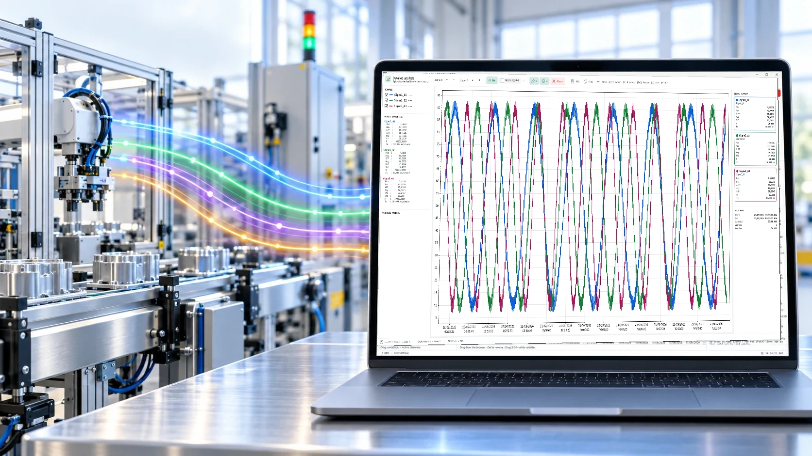
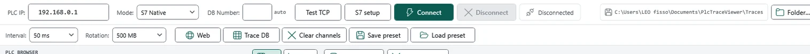
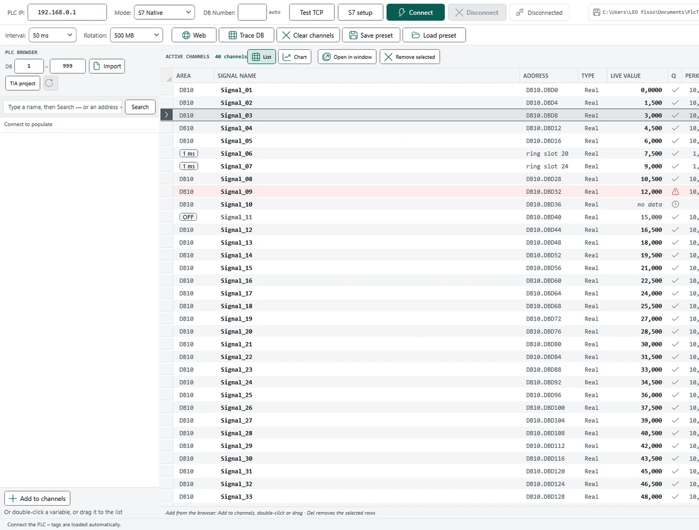
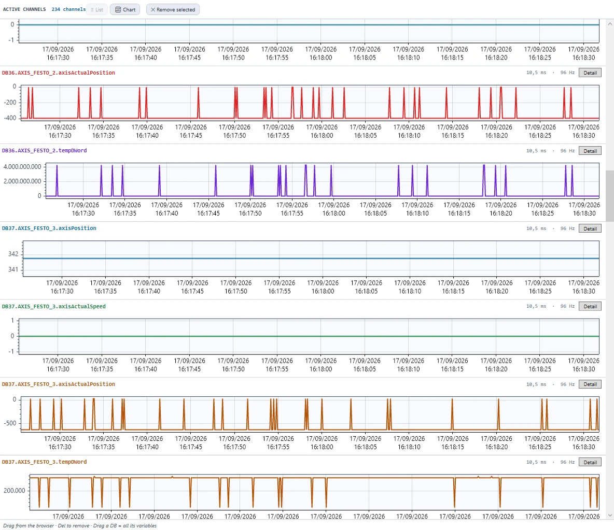
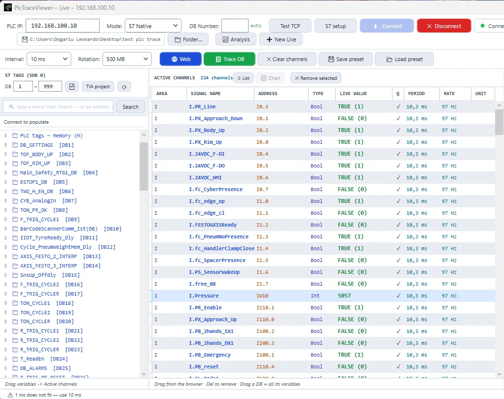
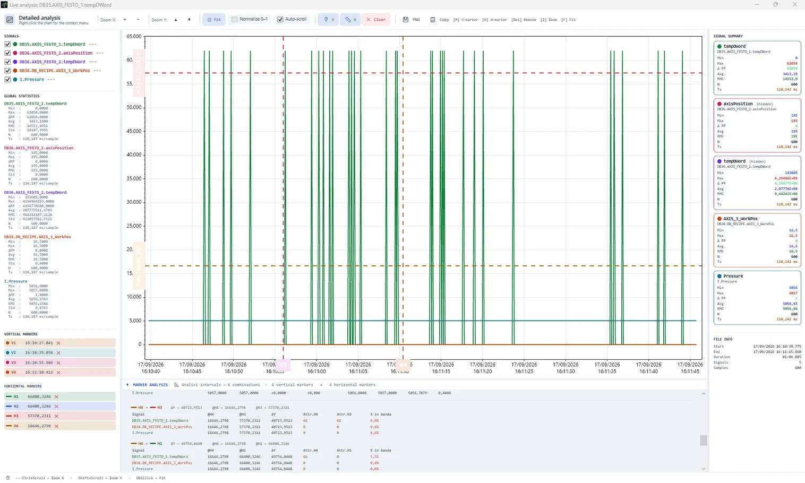
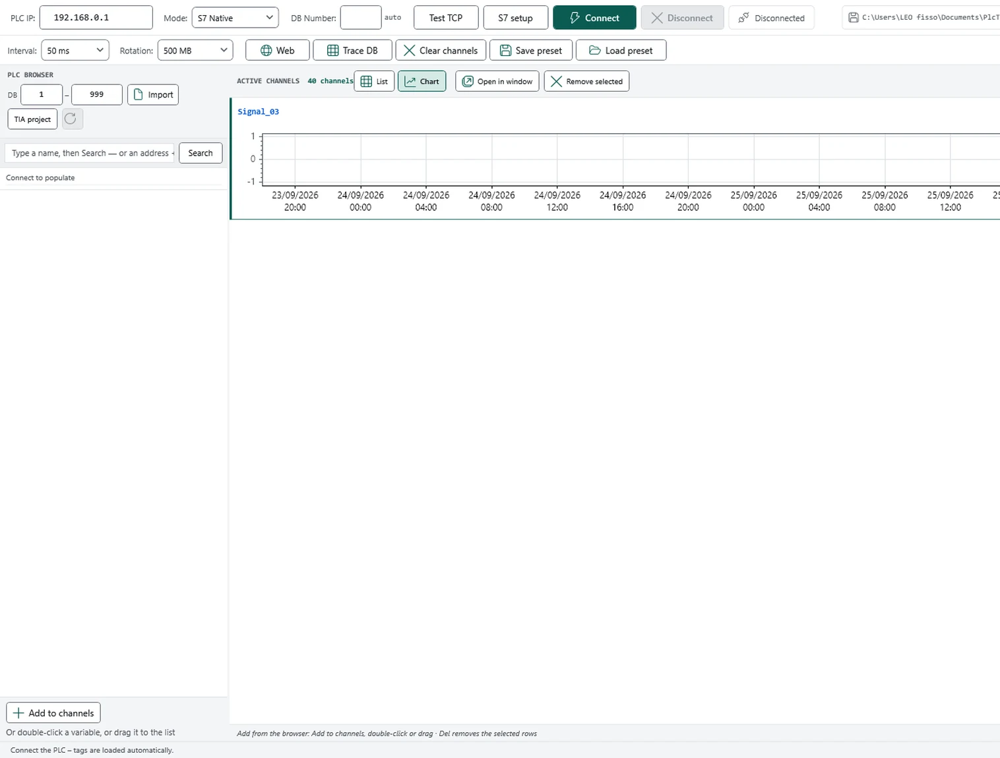
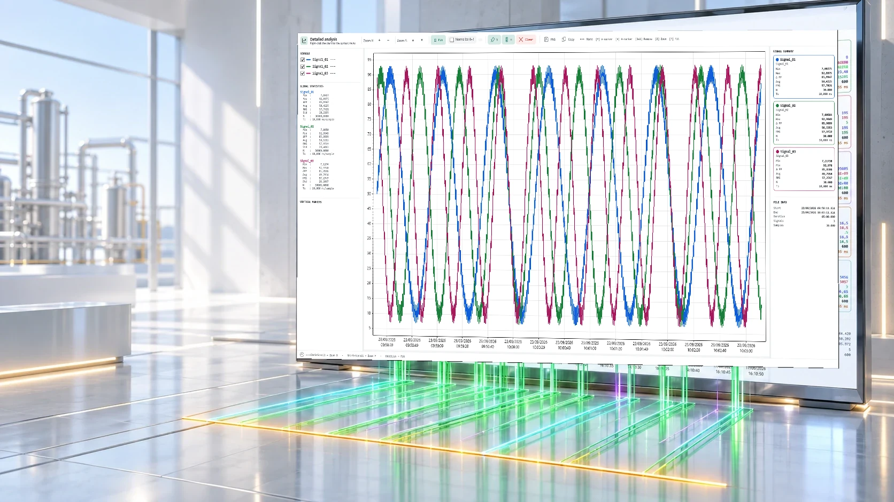
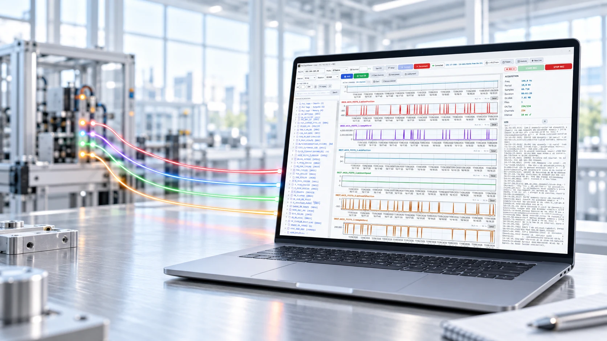

Registratore di segnali · PLC Siemens S7 Signal recorder · Siemens S7 PLCs
Il millisecondo che ti mancava.
The millisecond you were missing.
PlcTraceViewer si collega al PLC mentre la linea lavora e registra i segnali con il loro tempo vero. L'acquisizione gira in un processo tutto suo: quello che succede a schermo non sposta un campione.
PlcTraceViewer connects to the PLC while the line is running and records signals with their real time. Acquisition runs in a process of its own: whatever happens on screen cannot move a sample.
Windows 10 / 11 · 64 bit · nessun runtime da installare · funziona offline
Windows 10 / 11 · 64-bit · no runtime to install · works offline
Rappresentazione grafica, non dati di un impianto reale. An illustration, not data from a real plant.
Perché esisteWhy it exists
Quando la linea si ferma, la domanda è sempre la stessa: cos'è successo prima?
When the line stops, the question is always the same: what happened just before?
Rispondere richiede i segnali di quel momento, con il loro tempo. Non una media, non l'ultimo valore, non un grafico che parte quando ti colleghi.
Answering needs the signals of that moment, with their time. Not an average, not the last value, not a chart that starts when you connect.
Il trace della CPU finisce
The CPU's own trace runs out
Buffer limitato, poche tracce, e quando è pieno si ferma. Il guasto intermittente, intanto, aspetta la notte del sabato.
A limited buffer, a handful of traces, and it stops when it is full. The intermittent fault, meanwhile, waits for Saturday night.
L'HMI ti mostra adesso
The HMI shows you now
Ottimo per condurre l'impianto, inutile per capire un evento durato 40 ms tre ore fa.
Perfect for running the plant, useless for understanding an event that lasted 40 ms three hours ago.
Un export non dice quando
An export does not say when
Una colonna di numeri senza l'istante reale di ogni lettura non ti fa misurare un ritardo, né confrontare due segnali.
A column of numbers without the real instant of each read lets you measure neither a delay nor the distance between two signals.

Acquisizione liveLive acquisition Dal campo allo schermo, senza passaggi intermedi.From the floor to the screen, with nothing in between.
In tre passiIn three steps
Colleghi, scegli i canali, registri.
Connect, pick your channels, record.
Nessun progetto da preparare, nessun blocco da scaricare nella CPU: il primo file può essere sul disco cinque minuti dopo l'installazione.
No project to prepare, nothing to download into the CPU: your first file can be on the disk five minutes after installing.
Indirizzo e via di accesso
Address and route
IP della CPU e modo di collegamento. Un test di raggiungibilità dice subito se il problema è la rete o la CPU.
The CPU's IP and the connection mode. A reachability test tells you at once whether the problem is the network or the CPU.

I segnali con i loro nomi
Signals with their own names
I blocchi arrivano dal progetto TIA, da una tabella tag o direttamente dalla CPU. Trascini quello che ti serve.
Blocks come from the TIA project, from a tag table, or straight from the CPU. You drag in what you need.

REC — e il passo te lo dice lui
REC — and it tells you the step
Prima di scrivere il primo file verifica che l'intervallo richiesto stia in piedi su quella CPU. Se non ci sta, lo dice.
Before writing the first file it checks that the interval you asked for holds on that CPU. If it does not, it says so.


Il percorso del datoThe path of the data Un segnale attraversa tutto: letto, registrato, analizzato.One signal goes all the way: read, recorded, analysed.
Il posto di lavoroThe workspace
Tutto in una finestra, mentre registra.
Everything in one window, while it records.
Il valore, e con che passo è arrivato
The value, and how fast it arrived
Accanto a ogni canale c'è il periodo con cui viene realmente letto e la sua frequenza. Nessun numero nominale spacciato per reale.
Next to every channel is the period at which it is actually read, and its rate. No nominal figure passed off as the real one.
Le curve si formano sotto gli occhi
The curves build up as you watch
Decine di segnali sullo stesso asse dei tempi, mentre il file cresce sul disco. Nessuna attesa, nessun export intermedio.
Dozens of signals on one time axis while the file grows on disk. No waiting, no intermediate export.
Anche I, Q e merker, non solo DB
I, Q and memory too, not just DBs
Un fine corsa e una pressione analogica finiscono sullo stesso grafico, con lo stesso asse dei tempi.
A limit switch and an analogue pressure end up on the same plot, sharing one time axis.
La finestra di analisi si apre sul vivo
The analysis window opens on live data
Gli stessi strumenti che useresti su una registrazione salvata, su un segnale che sta arrivando adesso.
The same tools you would use on a saved recording, on a signal arriving right now.
Misuri, non stimi
You measure, you do not estimate
Due marker verticali danno ΔT, frequenza e la differenza di ogni segnale in quell'intervallo, in una tabella che puoi copiare.
Two vertical markers give ΔT, the matching frequency and every signal's difference over that interval, in a table you can copy.





VelocitàSpeed
L'applicazione non è più il collo di bottiglia.
The application is no longer the bottleneck.
In un programma normale, l'acquisizione divide il processo con la finestra: basta scorrere un elenco, ridisegnare un grafico o una pausa del gestore di memoria perché un campione arrivi tardi. Qui l'acquisizione vive in un processo separato ad alta priorità, che non disegna niente: legge il PLC e marca ogni campione nell'istante in cui la risposta è arrivata.
In a normal program, acquisition shares the process with the window: scrolling a list, redrawing a chart or one pause of the memory manager is enough to make a sample late. Here acquisition lives in a separate, high-priority process that draws nothing: it reads the PLC and stamps every sample at the instant the answer arrived.
Banco di prova: 100 canali a 1 ms contro CPU simulate, con la finestra volutamente sotto carico. Test bench: 100 channels at 1 ms against simulated CPUs, with the window deliberately under load.

La registrazioneThe recording
Quattro promesse sul file che ti porti a casa.
Four promises about the file you take home.
Una registrazione che non si può analizzare non è un fastidio: è la nottata buttata, e te ne accorgi quando l'impianto è già ripartito.
A recording you cannot analyse is not an annoyance: it is the whole night wasted, and you find out once the plant is running again.
Il tempo è quello vero
The time is the real one
Ogni campione porta l'istante in cui è stato effettivamente letto — preso nel processo di acquisizione, non quando la finestra ha avuto tempo di occuparsene.
Every sample carries the instant it was actually read — taken in the acquisition process, not when the window got round to it.
Niente dati inventati
Nothing is invented
Se un valore non arriva resta un valore mancante, e come tale lo ritrovi all'analisi. Mai uno zero: uno zero sembra una misura, e ci si costruisce sopra la conclusione sbagliata.
If a value does not arrive it stays a missing value, and that is how you find it again. Never a zero: a zero looks like a measurement, and the wrong conclusion gets built on top of it.
Ti avvisa prima, non dopo
You are told before, not after
La velocità richiesta viene verificata sulla tua CPU prima che il primo file venga aperto. Se non regge, ti propone il passo che regge davvero.
The rate you asked for is checked on your CPU before the first file is opened. If it does not hold, it offers the step that does.
Non ti lascia scoprire i guai domani
No nasty surprises tomorrow
La scrittura è sorvegliata mentre gira e lo spazio su disco si gestisce da sé. Se qualcosa si ferma lo sai subito, non la mattina dopo davanti a un file vuoto.
Writing is watched while it runs and disk space looks after itself. If something stops you know at once, not the next morning in front of an empty file.
Estratto del registro dell'applicazione (tradotto per il sito). An extract of the application log (translated for the site).


AnalisiAnalysis I numeri prendono forma mentre la macchina lavora.The numbers take shape while the machine runs.
AnalisiAnalysis
Gli stessi strumenti sul file e sul vivo.
The same tools on the file and on live data.
La finestra di analisi che useresti su una registrazione si apre anche su un segnale che sta arrivando adesso. Trascinandoci dentro altri canali si sovrappongono allo stesso grafico.
The analysis window you would use on a recording opens just as well on a signal arriving right now. Drag other channels in and they overlay on the same plot.
Marker e misure
Markers and measurements
Marker verticali e orizzontali, differenza di tempo, differenza di valore e la frequenza corrispondente. La tabella dei confronti si copia e si incolla in un rapporto.
Vertical and horizontal markers, time difference, value difference and the matching frequency. The comparison table copies and pastes straight into a report.
Statistiche
Statistics
Minimo, massimo, picco-picco, media, RMS e deviazione standard: sul tratto selezionato e sull'intero segnale, con il numero di campioni e il passo reale.
Minimum, maximum, peak-to-peak, mean, RMS and standard deviation: over the selected span and over the whole signal, with the sample count and the real step.
Finestre staccabili PRO
Detachable windows PRO
Ogni analisi è una finestra indipendente: due monitor, due segnali, due zoom diversi sullo stesso istante.
Each analysis is an independent window: two monitors, two signals, two different zooms on the same instant.

Segnali calcolati · PROComputed signals · PRO
Un canale può essere una formula.
A channel can be a formula.
Derivate, integrali, filtri in Hz, statistiche a finestra, fronti, temporizzazioni, analisi in frequenza. Si compongono fra loro e si applicano anche ai canali calcolati, con l'anteprima della curva mentre scrivi.
Derivatives, integrals, filters in Hz, windowed statistics, edges, timers, frequency analysis. They compose freely, apply to computed channels too, and preview the curve as you type.
Tutte le 94 funzioni, quelle vere All 94 functions, the real ones
Questo elenco è generato dal registro dell'applicazione: quello che leggi qui è quello che l'editor accetta. This list is generated from the application's own registry: what you read here is what the editor accepts.
CollegamentoConnection Il cablaggio diventa un segnale con un nome.Wiring becomes a signal with a name.
CollegamentoConnection
Tre vie verso la CPU, tenute separate.
Three routes to the CPU, kept separate.
Scegli quella adatta al controllore e ai blocchi che devi leggere. Il programma ti dice sempre da quale via arriva ogni valore.
Pick the one that suits your controller and the blocks you need to read. The program always tells you which route a value came from.
| Via | CPU | Indirizzamento | Blocchi ottimizzati | Serve sulla CPU |
|---|---|---|---|---|
| Route | CPU | Addressing | Optimised blocks | Needed on the CPU |
| PUT/GET | S7-300 / 400 / 1200 / 1500 | assoluto | non leggibili | accesso PUT/GET consentito |
| PUT/GET | S7-300 / 400 / 1200 / 1500 | absolute | not readable | PUT/GET access allowed |
| OPC UA | S7-1200 / 1500 | simbolico | leggibili | server OPC UA attivo e licenziato |
| OPC UA | S7-1200 / 1500 | symbolic | readable | OPC UA server enabled and licensed |
| S7comm-Plus | S7-1500 ≥ V2.9 S7-1200 ≥ V4.3 | simbolico | leggibili | comunicazione PG/PC e HMI sicura |
| S7comm-Plus | S7-1500 ≥ V2.9 S7-1200 ≥ V4.3 | symbolic | readable | secure PG/PC and HMI communication |
I nomi sono i tuoi
The names are yours
I segnali portano i nomi che hai dato loro in TIA: dal progetto (.ap16 → .ap21), dalle sorgenti dei blocchi (.db, .scl, .udt), da una tabella tag (.xlsx, .csv) oppure letti direttamente dalla CPU, senza avere il progetto sotto mano.
Signals carry the names you gave them in TIA: from the project (.ap16 → .ap21), from block sources (.db, .scl, .udt), from a tag table (.xlsx, .csv), or read straight from the CPU without having the project to hand.

Quando la rete non bastaWhen the network is not enough
Il campionamento si sposta dentro la CPU.
Sampling moves inside the CPU.
Se il passo che ti serve non è realistico sulla rete, il programma prepara i blocchi da importare in TIA: il PLC campiona al ritmo del proprio OB e l'applicazione preleva a blocchi. Il passo del file smette di dipendere dal traffico.
If the step you need is not realistic over the network, the program prepares the blocks to import into TIA: the PLC samples at the pace of its own OB and the application collects in batches. The file's step stops depending on traffic.
Scegli quanti segnali per tipo e quanto profondo dev'essere il buffer; la memoria occupata nel PLC è scritta prima di generare. Sono blocchi nuovi: nessun blocco esistente viene toccato.
You choose how many signals of each type and how deep the buffer is; the memory it will take in the PLC is spelled out before generating. They are new blocks: nothing existing is touched.


Dashboard web · PROWeb dashboard · PRO
I valori dal browser, e il tasto REC da lì.
Live values in the browser, and REC from there.
Un servizio Windows pubblica i valori correnti su una pagina consultabile da qualsiasi PC della rete di impianto: valori in tempo reale, andamento recente, stato del disco, avvio e arresto della registrazione.
A Windows service publishes the current values on a page any PC on the plant network can open: live values, recent trend, disk state, start and stop of the recording.
La registrazione avviata dalla pagina è la stessa dell'applicazione, non una seconda copia parallela: un solo registratore, un solo file.
The recording started from the page is the application's own, not a second parallel copy: one recorder, one file.
TrasparenzaTransparency
Cosa non fa.
What it does not do.
Meglio saperlo prima di scaricarlo che dopo averlo portato in impianto.
Better to know before downloading than after taking it to the plant.
- Non scrive nel PLC. Legge e basta: non forza variabili, non modifica il programma utente e non cambia lo stato della CPU.
- Non promette una velocità fissa. Il passo che riesci a tenere dipende dal controllore, dai canali e dalla rete: viene misurato in campo e dichiarato, non promesso in anticipo.
- Non legge i blocchi ottimizzati per indirizzo. Non è un limite del software: quei blocchi non hanno indirizzi assoluti. Servono OPC UA o S7comm-Plus.
- Non sostituisce TIA Portal. Non programma, non compila, non fa diagnostica hardware: registra e analizza segnali.
- Non è un sistema di storicizzazione. È uno strumento da messa in servizio e da ricerca guasti, non un archivio di processo permanente.
- Non registra senza licenza. La versione base apre e analizza le registrazioni; per collegarsi al PLC, registrare ed esportare serve la chiave PRO.
- Non richiede internet — e quindi non lo offre. Nessuna sincronizzazione cloud, nessun accesso da fuori della tua rete. Nemmeno per la licenza.
- It does not write to the PLC. It only reads: no forcing, no changes to the user program, no change of CPU state.
- It does not promise a fixed rate. The step you can hold depends on the controller, the channels and the network: it is measured on site and stated, not promised in advance.
- It cannot read optimised blocks by address. That is not a software limitation: those blocks have no absolute addresses. OPC UA or S7comm-Plus is required.
- It is not a replacement for TIA Portal. No programming, no compiling, no hardware diagnostics: it records and analyses signals.
- It is not a historian. This is a commissioning and fault-finding tool, not a permanent process archive.
- It does not record without a licence. The base version opens and analyses recordings; connecting to the PLC, recording and exporting need the PRO key.
- It needs no internet — and offers none. No cloud sync, no access from outside your own network. Not even for licensing.
EdizioniEditions
La Base analizza. La PRO collega.
Base analyses. PRO connects.
La versione Base apre e analizza le registrazioni. Collegarsi al PLC, registrare ed esportare sono funzioni PRO: si sbloccano con una chiave legata alla tua macchina, firmata e completamente offline — nessuna connessione a internet, né la prima volta né dopo. In impianto, internet spesso non c'è.
The Base version opens and analyses recordings. Connecting to the PLC, recording and exporting are PRO features: they unlock with a key bound to your machine, signed and entirely offline — no internet connection, the first time or ever after. On a plant floor there usually isn't any.
Legge e analizza
Reads and analyses
Si usa subito, senza attivazione e senza scadenza.
Works straight away, with no activation and no expiry.
- Apre .drug, .drug.gz, .csv, .txt — un file per volta
- Grafici multi-segnale sullo stesso asse dei tempi, zoom e pan
- Marker verticali e orizzontali, ΔT, Δvalore e frequenza
- Statistiche sul tratto selezionato e sull'intero segnale
- Nessuna attivazione, nessuna scadenza, nessun account
- Opens .drug, .drug.gz, .csv, .txt — one file at a time
- Multi-signal charts on one time axis, zoom and pan
- Vertical and horizontal markers, ΔT, Δvalue and frequency
- Statistics over the selected span and the whole signal
- No activation, no expiry, no account
Collega, registra, esporta
Connects, records, exports
Tutto quello che tocca il PLC e tutto quello che esce dal programma.
Everything that touches the PLC, and everything that leaves the program.
- Acquisizione dal vivo e registrazione — S7-300 / 400 / 1200 / 1500
- Generazione dei blocchi per il campionamento a 1 ms dentro il PLC
- Dashboard web sulla rete di impianto
- Editor delle espressioni: le 94 funzioni dei segnali calcolati
- Più registrazioni aperte insieme, con assi dei tempi sincronizzati
- Finestre staccabili per lavorare su due monitor
- Esportazione CSV, immagine ad alta risoluzione, copia negli appunti
- Importazione dei file di ibaAnalyzer
- Live acquisition and recording — S7-300 / 400 / 1200 / 1500
- Generation of the blocks for 1 ms sampling inside the PLC
- Web dashboard on the plant network
- The expression editor: all 94 computed-signal functions
- Several recordings open at once, with synchronised time axes
- Detachable windows, to work across two monitors
- CSV export, high-resolution image, copy to clipboard
- Import of ibaAnalyzer files

In campoOn site Basta un portatile, un cavo di rete e cinque minuti.A field laptop, a network cable and five minutes.
Download
Installalo e aprilo.
Install it and open it.
L'installer contiene tutto: nessun runtime da procurarsi, nessuna configurazione da preparare. Se hai già una versione aperta, chiudila prima di installare.
The installer contains everything: no runtime to fetch, nothing to configure beforehand. If an earlier version is open, close it before installing.
Scarica
Download
Il file arriva da GitHub. Se Windows SmartScreen ti avvisa, scegli Ulteriori informazioni → Esegui comunque.
The file comes from GitHub. If Windows SmartScreen warns you, choose More info → Run anyway.
Installa
Install
Procedura guidata standard. Il servizio della dashboard si registra e si avvia da sé.
A standard wizard. The dashboard service registers and starts on its own.
Collega
Connect
Indirizzo della CPU, canali trascinati dentro, REC. Il resto te lo dice il programma.
The CPU address, your channels dragged in, REC. The program tells you the rest.
PlcTraceViewer_Setup_v2.0.exe Windows 10 / 11 · 64 bit · porta 102 verso la CPU· port 102 to the CPU · nessun account, nessuna registrazione· no account, no sign-up
FAQ